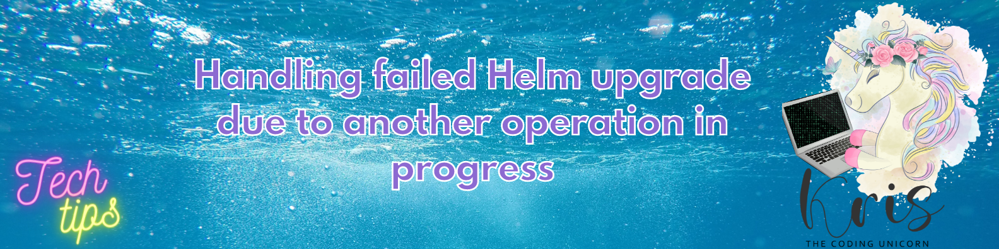

Handling Failed Helm Upgrade Due to Another Operation in Progress

Sometimes things may go wrong, also during ugprade of the application that is deployed to a Kubernetes cluster with Helm. When something goes wrong, you fix it and re-try a deployment with the new fix included. But then deployment operation fails with following error message:
Error: UPGRADE FAILED: another operation (install/upgrade/rollback) is in progress
So, what does it mean and how can you fix it?
This happens typically when Helm attempts to roll out a new revision of an application and then something goes wrong in the process, like a bug in an application itself or an issue inside the Kubernetes cluster which causes the new deployment to never get completed. This faulty deployment becomes dangling, therefore preventing all the future deployments to be rolled out. You can easily check the latest deployment status by retrieving the history of application deployments with helm history. It will look something like this:
PS C:\> helm history test-app -n test-app
REVISION UPDATED STATUS CHART APP VERSION DESCRIPTION
7 Fri Apr 22 06:44:47 2022 superseded test-app-0.1.232-move-ps.17 0.1.232-move-ps.17 Upgrade complete
8 Fri Apr 22 07:26:30 2022 superseded test-app-0.1.232-move-ps.18 0.1.232-move-ps.18 Upgrade complete
9 Fri Apr 22 08:49:51 2022 superseded test-app-0.1.232-PullRequest45039.23 0.1.232-PullRequest45039.23 Upgrade complete
10 Mon Apr 25 10:46:23 2022 superseded test-app-0.1.232-add-ma.3 0.1.232-add-ma.3 Upgrade complete
11 Mon Apr 25 11:15:52 2022 superseded test-app-0.1.232-add-ma.5 0.1.232-add-ma.5 Upgrade complete
12 Mon Apr 25 12:06:04 2022 superseded test-app-0.1.232-PullRequest45039.24 0.1.232-PullRequest45039.24 Upgrade complete
13 Mon Apr 25 13:39:56 2022 superseded test-app-0.1.232 0.1.232 Upgrade complete
14 Mon Apr 25 14:29:40 2022 superseded test-app-0.1.233-PullRequest45146.2 0.1.233-PullRequest45146.2 Upgrade complete
15 Mon Apr 25 14:49:18 2022 deployed test-app-0.1.233 0.1.233 Upgrade complete
16 Tue Jun 14 12:28:20 2022 pending-upgrade test-app-0.1.244-PullRequest47437.3 0.1.244-PullRequest47437.3 Preparing upgrade
As you can see in the last entry there, a deployment with revision 16 has had status pending-upgrade since June, 14th which is almost a week long at the time of writing of this blog post. No application can take such a long time to deploy (I hope)!😸 So let's fix it!
Please note that even with the dangling deployment like this Helm upgrade operation performs a rolling update which means that the previous version of your applicaiton will still be running until the rollout of the new version is confirmed to be healthy and available. You can easily check that by running
kubectl get pods -n [app_namespace]command.
In order to fix this error all you need to do is to perform a rollback with helm rollback [release_name] [revision_number] -n [app_namespace] so that the latest stable version of the deployment will become the active one and the dangling deployment will be canceled. In the example above deployment with revision 15 is the one that is known to be stable and was successfully rolled out before so we can perform a rollback like this:
PS C:\> helm rollback test-app 15 -n test-app
Rollback was a success! Happy Helming!
If we get history of Helm deployments once again, we can see that the dangling release got rolled back under revision 17 to the latest stable release which now gets next active revision number 18 (you can see that the app version for revision 15 and 18 is the same which is expected):
PS C:\> helm history matrikkel-adapter -n matrikkel-adapter
REVISION UPDATED STATUS CHART APP VERSION DESCRIPTION
9 Fri Apr 22 08:49:51 2022 superseded test-app-0.1.232-PullRequest45039.23 0.1.232-PullRequest45039.23 Upgrade complete
10 Mon Apr 25 10:46:23 2022 superseded test-app-0.1.232-add-ma.3 0.1.232-add-ma.3 Upgrade complete
11 Mon Apr 25 11:15:52 2022 superseded test-app-0.1.232-add-ma.5 0.1.232-add-ma.5 Upgrade complete
12 Mon Apr 25 12:06:04 2022 superseded test-app-0.1.232-PullRequest45039.24 0.1.232-PullRequest45039.24 Upgrade complete
13 Mon Apr 25 13:39:56 2022 superseded test-app-0.1.232 0.1.232 Upgrade complete
14 Mon Apr 25 14:29:40 2022 superseded test-app-0.1.233-PullRequest45146.2 0.1.233-PullRequest45146.2 Upgrade complete
15 Mon Apr 25 14:49:18 2022 superseded test-app-0.1.233 0.1.233 Upgrade complete
16 Tue Jun 14 12:28:20 2022 pending-upgrade test-app-0.1.244-PullRequest47437.3 0.1.244-PullRequest47437.3 Preparing upgrade
17 Mon Jun 20 10:28:05 2022 superseded test-app-0.1.233 0.1.233 Rollback to 15
18 Mon Jun 20 08:29:52 2022 deployed test-app-0.1.244-PullRequest47437.29 0.1.244-PullRequest47437.29 Upgrade complete
If we now re-try deployment of a new version of the application, the upgrade failed error will not appear anymore and the new deployment should succeed.
helm rollback is a useful command which you can also use to roll back to the latest stable release in case you discover issues during testing of your application. You can read more about it here: Helm Rollback
Thanks for reading and till next tech tip 😻